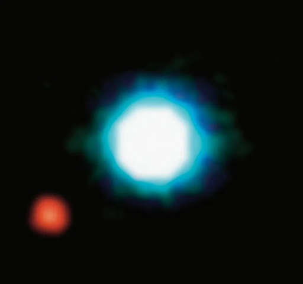
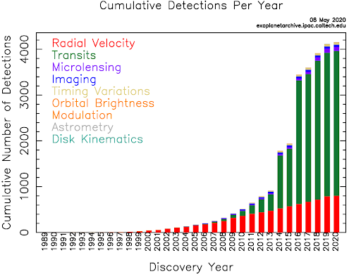
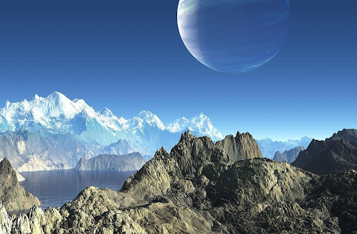
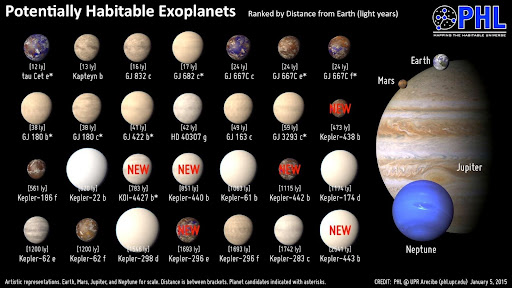
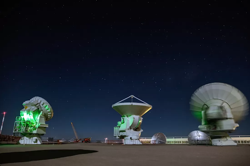

Exploring Exoplanets: Unveiling The Mysteries Beyond Our Solar System
- May 29, 2024
- Admin
- 3 Comments
What are Exoplanets ? - A brief introduction.
Exoplanets, planets orbiting stars outside our solar system, have captivated the scientific community and the public alike with the promise of revealing the diversity of planetary systems beyond our own. This article provides an overview of he current understanding of exoplanets, including detection methods, classification, and key discoveries. We explore the significance of exoplanet research in advancing our understanding of planetary formation, habitability, and the search for extraterrestrial life.

This composite image shows an exoplanet (the red spot on the lower left), orbiting the brown dwarf 2M1207 (center). 2M1207b is the first exoplanet directly imaged and the first discovered orbiting
a brown dwarf. It was imaged for the first time by the VLT in 2004. Its planetary identity and characteristics were confirmed after one year of observations in 2005. 2M1207b is a Jupiter-like planet,
5 times more massive than Jupiter. It orbits the brown dwarf at a distance 55 times larger than the Earth to the Sun, nearly twice as far as Neptune is from the Sun. The system 2M1207 lies at a distance
of 230 light-years, in the constellation of Hydra. The photo is based on three near-infrared exposures (in the H, K and L wavebands) with the NACO adaptive-optics facility at the 8.2-m VLT Yepun
telescope at the ESO Paranal Observatory
In the vast expanse of the universe, exoplanets have become a focal point of astronomical research, offering insights into planetary formation,
habitability, and the possibility of extraterrestrial life. Since the discovery of the first exoplanet in 1992, astronomers have identified thousands of these distant worlds orbiting stars
beyond our solar system. With over 4000 confirmed exoplanets to date, ranging from rocky terrestrial worlds to gas giants, our understanding of planetary systems has undergone a revolution.
This article aims to delve into the fascinating realm of exoplanets, discussing the methods used to detect them, their classification, and the implications of their discovery.
So how do we find these potential Alien Harbouring planets?
Various detection methods have enabled astronomers to identify exoplanets, including the transit method, radial velocity method, direct imaging, and gravitational microlensing.
The transit method involves observing the slight dimming of a star's light as an exoplanet passes in front of it, while the radial velocity method detects the gravitational
tug of an orbiting planet on its parent star, causing it to wobble. Direct imaging allows astronomers to capture images of exoplanets, albeit challenging due to the overwhelming
brightness of stars. Gravitational microlensing occurs when the gravity of a foreground star magnifies the light of a background star, revealing the presence of an exoplanet
through subtle distortions in the light curve.

How would these alien worlds look, if we ever visited them ?
Exoplanets exhibit a wide range of characteristics, including size, composition, and orbital dynamics. They can be classified into various categories based on their size, from
terrestrial-like rocky planets to gas giants akin to Jupiter and Saturn. Some exoplanets reside within the habitable zone of their host stars, where conditions may be suitable
for liquid water to exist on their surfaces, a crucial factor for the potential development of life as we know it. Additionally, exoplanets exhibit diverse orbital configurations,
with some orbiting close to their stars in scorching hot environments, while others follow more distant and cold trajectories.

1. Size and Composition:
Imagine a world where towering mountains cast long shadows across vast plains, where ancient rivers carve deep valleys through rugged terrain.
This is the realm of terrestrial exoplanets, rocky worlds that echo the landscapes of our own planet. But beyond these familiar landscapes lie gas giants, behemoths of swirling clouds
and turbulent storms, where gravity reigns supreme and alien moons dance in the sky.
2. Habitable Zone Worlds:
Picture a planet bathed in the gentle glow of a distant
star, its surface kissed by the warmth of sunlight. Here, within the habitable zone, where temperatures are just right, oceans shimmer beneath azure skies, and forests teem with life.
This is the realm of possibility, where the ingredients for life as we know it may mingle and evolve into something wondrous.
3. Orbital Dynamics:
Journey to the edge
of a star's domain, where worlds of fire and ice dance in intricate orbits. Close-in "hot Jupiters" bear the brunt of stellar fury, their atmospheres whipped by blistering winds and
scorched by searing heat. Meanwhile, distant icy worlds glide in silent majesty, their surfaces cloaked in frost and mystery, beckoning explorers to unravel their secrets.
In this grand cosmic theater, each exoplanet is a character in a story waiting to be told. From the rocky shores of distant continents to the stormy skies of gas giants, the
diversity of these worlds sparks our imagination and fuels our curiosity. As we peer into the vast expanse of space, we are reminded of the boundless wonders that await us, just
waiting to be discovered beyond the next horizon.
What have we found till now?
The study of exoplanets has yielded numerous groundbreaking discoveries, including the detection of potentially habitable worlds, exotic planetary systems, and the prevalence of planetary
diversity. Notable examples include the TRAPPIST-1 system with seven Earth-sized planets, the first exomoon candidate, and the detection of water vapor in the atmosphere of distant worlds.
These discoveries have profound implications for our understanding of planetary formation, habitability, and the search for life beyond Earth.
The search for habitable exoplanets
focuses on identifying worlds with the necessary conditions to support life. These conditions include a stable atmosphere, liquid water, and a favorable surface temperature range.
Scientists study potential biosignatures, such as the presence of certain gasses like oxygen and methane in exoplanet atmospheres, which could indicate biological activity. Additionally,
the composition of an exoplanet's atmosphere can provide clues about its geology, climate, and potential habitability.

The Search for Extraterrestrial Life (Aliens) :
One of the most compelling aspects of exoplanetary science is its potential to answer the age-old question: are we alone in the universe? While the detection of biosignatures remains elusive,
ongoing efforts to characterize exoplanet atmospheres and assess their potential for habitability bring us closer to answering this fundamental question. Future missions, such as the James
Webb Space Telescope and next-generation ground-based observatories, hold promise for further advancing the search for extraterrestrial life.
How does the scientific community classify them?
Exoplanets exhibit a wide range of characteristics, leading to various classification schemes based on factors such as size, composition, and orbital properties. They can be broadly categorized into gas giants, terrestrial planets, and ice giants, mirroring the diversity of our own solar system. Further subdivisions include hot Jupiter, super-Earths, and mini-Neptune, each with distinct features and formation mechanisms.
Exoplanet Atmospheres and Climate:
Characterizing exoplanet atmospheres is crucial for understanding their climate and potential habitability. Spectroscopic analysis allows scientists to study the chemical composition of exoplanet
atmospheres by analyzing the absorption and emission lines in their spectra. This approach has led to the detection of various compounds, including water vapor, carbon dioxide, and hydrogen cyanide.
Climate models help simulate the atmospheric conditions of exoplanets, predicting temperature gradients, cloud formations, and the presence of weather patterns, providing valuable insights into their environmental dynamics.

Exoplanet Diversity and Surprising Discoveries:
Recent discoveries have expanded our understanding of exoplanets, revealing unexpected diversity and phenomena. These include hot Jupiter, gas giants orbiting close to their stars; super-Earths, rocky exoplanets with masses higher than Earth's but lower than Neptune's; and rogue planets, which drift through space without orbiting a star. The existence of exomoons, natural satellites orbiting exoplanets, has also been proposed, although their detection remains challenging. Moreover, studies have unveiled exoplanets with eccentric orbits, extreme climates, and unusual compositions, challenging conventional theories of planetary formation and evolution.
What's in for the future?
The field of exoplanet research continues to advance rapidly, driven by technological innovations and international collaborations. Future space missions, such as the James Webb Space Telescope
(JWST) and the upcoming Extremely Large Telescope (ELT), promise to revolutionize our understanding of exoplanets by enabling detailed observations of their atmospheres, surfaces, and potential
signs of life. Ground-based surveys and space-based observatories will continue to search for exoplanets, aiming to discover Earth-like worlds and unravel the mysteries of planetary systems beyond
our own.

Conclusion:
Exoplanet research stands at the forefront of modern astronomy, offering profound insights into the origins, diversity, and potential for life in the universe. From the detection of distant worlds to the characterization of their atmospheres and climates, scientists are unlocking the secrets of exoplanetary systems with unprecedented precision and depth. The study of exoplanets represents a frontier in modern astronomy, offering insights into the formation, evolution, and diversity of planetary systems beyond our own. As technology advances and observational techniques improve, the exploration of exoplanets will undoubtedly yield even more fascinating discoveries, reshaping our understanding of planetary science and the cosmic tapestry of which we are a part. Ultimately, exoplanet research not only expands our understanding of the universe but also fuels our imagination about the possibility of life beyond Earth.